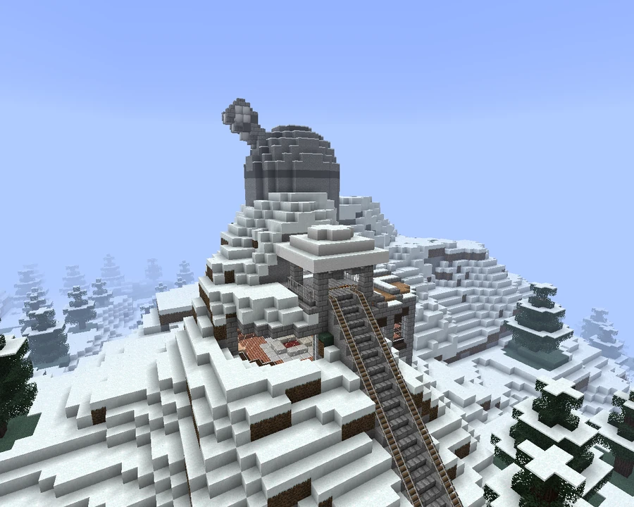

Broville Observatory
-144, 89, 2429
A large telescope in the mountains south of the Downtown docks, reached from the science center and accompanied by an exhibition of objects found nearby.
Location and visits
The observatory stands in the mountains south of the Downtown docks. The trail from the science center is the recommended approach. The institution serves scientists interested in the space beyond the save-file boundaries, the man in the Moon, and whatever might lie farther away. Its popularity is described as growing since its founding.
Visitors can see a museum of objects found in the surrounding area. The telescope is also available for public use when experiments are not in progress.



The v10 observatory
In v10, it was little more than a building on a small hill, a little beyond Oldshoes' house. It had a main circular chamber with adjoining living and science halls. A circular staircase inside the chamber was the only access to the telescope platform. According to its history, no remains of the telescope or complex were recovered from the disaster wreckage.
The v11 complex
The v11 history presents the building as the result of an order for a small desk microscope from Compass Ltd and SOLAR Corp. Instead, the companies delivered the observatory, and SOLAR engineers humorously argued that it more or less met the request.
After the building was completed, a rail line was established to make travel to the complex easier, as it is surrounded by dangerous snowy peaks.
See also
Sources and references
- v11.4.4 maps, signs, books and items World records
- Broville Observatory · Broville Wiki Community archive
- Build-team coordinate list — Observatory (warp 66) Map
Text adapted and expanded from Broville Observatory (contributors and history, revision 4970). Adapted text is available under CC BY-SA 3.0.